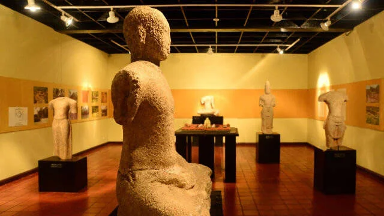

Discover the retrieved treasures and stone masterpieces that reveal the incredible sophistication of the Polonnaruwa era.
The Archaeological Museum of Polonnaruwa (Visitor Information Centre) is one of the best museums in Sri Lanka. It provides a logical and well-laid-out introduction to the ancient city, using dioramas and retrieved artifacts to bring the ruins to life.
Exhibits include incredible bronze statues of Hindu gods, medical instruments from the ancient hospital, and detailed models of how buildings in the quadrangle area once looked. It's an essential starting point for any visit to the ancient city.
Back to Polonnaruwa Hub